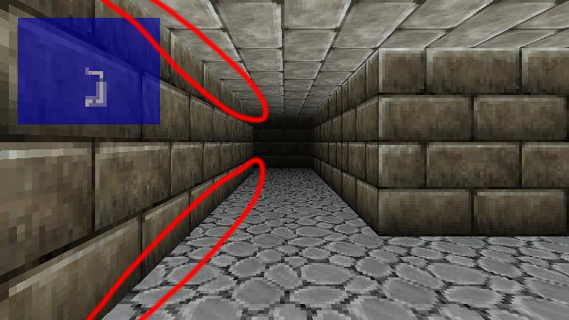
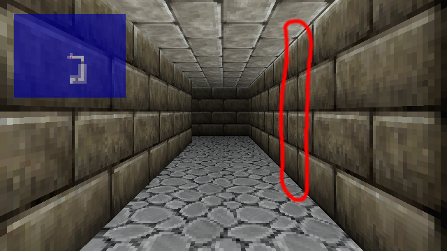
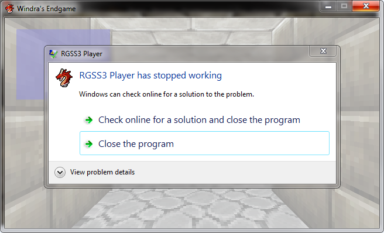

End of Windra's Endgame
Recent Events
Gate of Providence v1.0.3 has been released. It has reached a total of 10k+ views and 600+ downloads! I am currently writing a post-mortem on it, so expect it soon.
I also finally purchased RPG Maker MV during the Steam Summer Sale. I won't be porting any of my finished or in-progress VX Ace projects over, but I will probably make something with it in the future.
Project Roguelike Update
A glimpse of what the character creation screen will look like is in this video. I actually posted this video a long time ago, but neglected to post a follow-up devblog. Players will be able to select hairstyles for their front/rear hair, colors for front/rear, eye colors and accessories, skin tone and gender, and origin, which affects starting stats and items. Players can also randomize these options to get bizarre looking characters, which I know some people love to do. At the moment, there's an issue with framerate, which I will resolve eventually.
Windra's Endgame Update
I am stopping development of Windra's Endgame, for various reasons I will go over here on this blog post.
Graphical Glitches
 
Various graphical glitches remain unresolved, or rather, unresolvable. Because the game uses an external DLL, I do not have access to the source code and cannot attempt to fix these issues. These issues were present in the original demo of the FPLE DLL, but I only noticed them too late into development.
In the first picture, you can see that all walls on the left are missing a whole row of pixels on the top and bottom. This wouldn't be immediately obvious if it weren't for the edge pixels jutting out. This occurs for all walls on the left side of the camera.
In the second (and the first, if you look closely) picture, you can see a black line on the edge of the tile. This only occurs on corner tiles, but it is noticeable. On this map, it might not be too bad, but on other maps that more colorful, it stands out significantly.
Random and Constant Crashing

Also resulting from the DLL are constant random crashes. These aren't script errors, but rather DLL errors. The crash report doesn't tell me anything too useful, and even if it did I wouldn't be able to fix them due to the lack of source code. It's possible to crash the game by just moving around, or even standing still for too long, likely due to a memory leak of some sort. The developer of the DLL seemed to have disappeared (last update was in 2015) so it's unlikely there will be a fix for these issues. I tried to work around these issues by having the game autosave, but in the end, I would rather not release an unstable game.
Gameplay
After continuous playtesting with what was working, I realized that the game just wasn't fun for me. A big part of why I wanted to make this game in the first place was the first-person dungeon exploration system. It's a novel mechanic for RPG Maker, but an engine like Unity could easily make it. It seems pointless now to wrangle RPG Maker into making fake 3D when I could just use Unity for real 3D, without all the hassle. (That being said, I have yet to make anything with Unity. That will change in the future.)
The Plus Side
On the plus side, all the scripts and script modifications I wrote for this game could be reused for my other projects, Rondo of Wizardry and Love and Project Roguelike. This also freed up some art assets and story concepts, which I don't like to reuse, for use in future works. I also got some more practice with balancing and game design.
What's Next for Studio Xehryn
Windra's Endgame, with its current mechanics, is effectively cancelled. I may revisit this game as a different project in the future. All links to the game's page will also be removed.
Project Roguelike will slowly be worked on, but it is a game I look forward to completing.
What will definitely be completed is Rondo of Wizardry and Love. Currently, there is no release date, but I am as invested in this game as I was Gate of Providence, so it will be completed no matter how long it will take. Now that I'm more experienced, it should not take as long as Gate of Providence did.
If you enjoyed reading this post, feel free to follow us on Twitter to get updates on our games and blog posts!